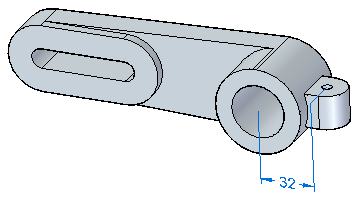
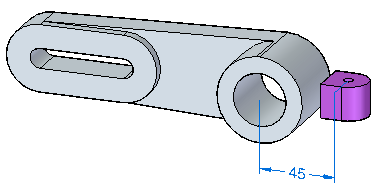
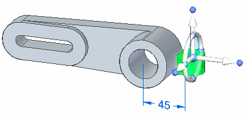
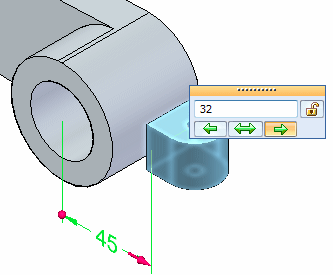
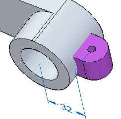
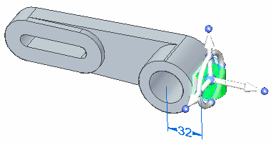

Activity: Attach
This activity demonstrates how to attach faces. Attach a mounting tab to an anchor bracket. In this activity you will:
-
Move faces.
-
Attach the faces.
Click here to download the activity file.

Attach a mounting tab to an anchor bracket.
-
Open attach.par.

In PathFinder, select the detached protrusion.

Click the 45 mm dimension. Make sure the dimension direction is as shown. Change the dimension to 32 and press Enter.

Left-click to finish the move.

Select the detached protrusion again. Right-click and select Attach.

On the Attach dialog, select Add.
The protrusion attaches. Notice the color change from that of construction faces to model faces.
Save and close the file.
In this activity you learned how to attach a detached feature. Detached faces display with a construction face color. As the faces attach to the solid model and form a volume, the faces turn the color of the solid model faces.
-
Click the Close button in the upper-right corner of this activity window.